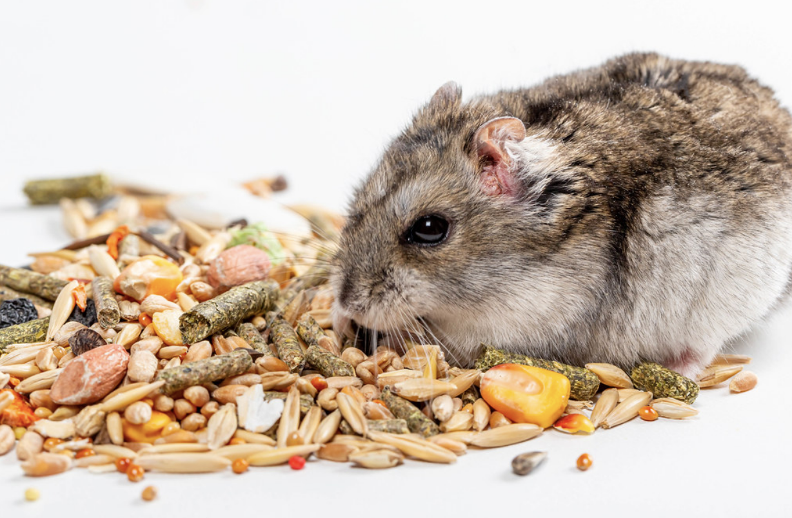
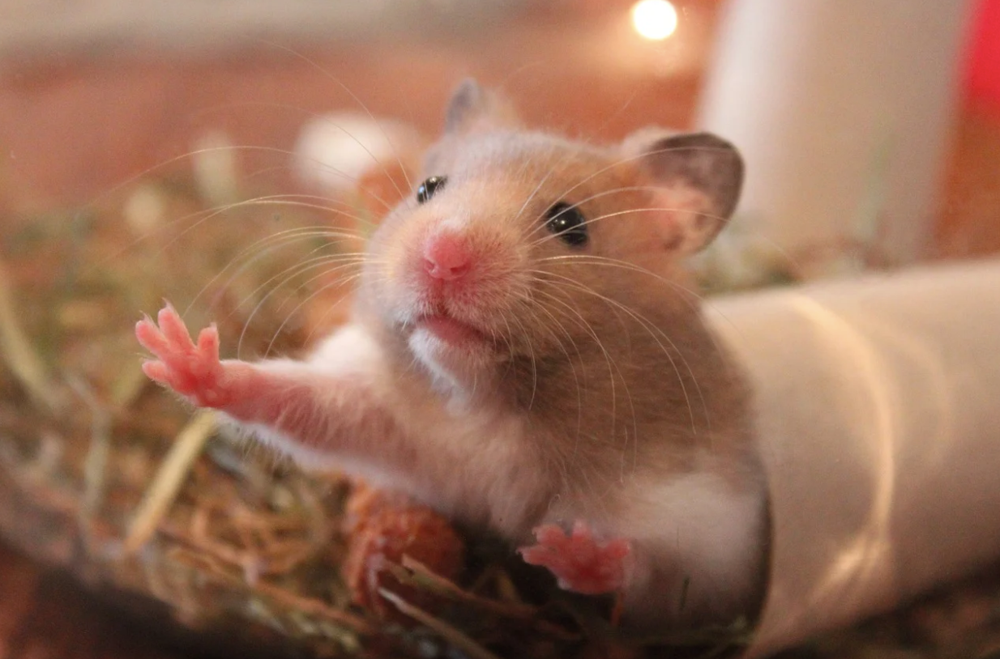

All hamsters are omnivorous, not herbivores (like rabbits or guinea pigs). That means that a hamster does not need to have hay in their diet, nor should they be fed hay based pellets like those used for rabbits or guinea pigs. Instead they need a protein rich seed based diet. It is recommended to use a high variety seed mix, such as the higgins sunburst seed mix, as a base for your hamsters diet. Then, you mix in a protein block, such as the Matsuri mouse and rat lab block, at a 50% ratio. This will provide your hamster with the nutrients it needs to survive, while also keeping the diet interesting for the hamster. Hamsters should also be fed fruits and vegetables, such as carrots, corn, celery, and strawberries, and be given fresh water daily.
In addition to their diet, hamsters also need enrichment to truly thrive in their environments. Hamsters are incredibely active creatures and need to be provided a suitablely sized hamster wheel so they can run during the night. This should be a wheel that is at least 8 inches, so a fully grown hamster can run on it with their back flat. If their back curves when they run, it could lead to spine issues. In addition to a hamster wheel, a hamster also needs to have hides. A hide is literally a place for your hamster to hide and rest in their cage. They can be wooden, ceramic, or even cardboard! Hamsters also enjoy having an area of their cage that is made up of sand, especially roborovski hamsters. Hamsters should not be bathed in water - instead they can clean themselves inside of areas of sand. This helps them manage the oils on their fur and keep their coats shiny. Hamsters can also be potty trained inside of their sand areas, just like a cat, which makes clean up easier for you, their owner. Lastly, hamsters should NEVER be housed together. They are not a social species, and will kill each other if they are housed together.
